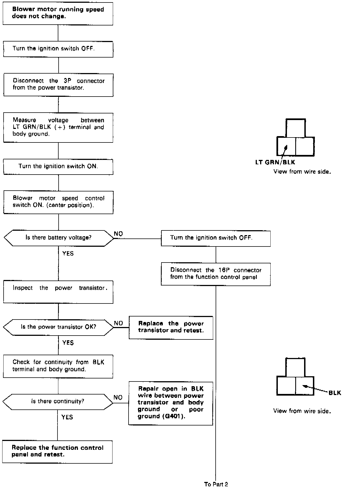
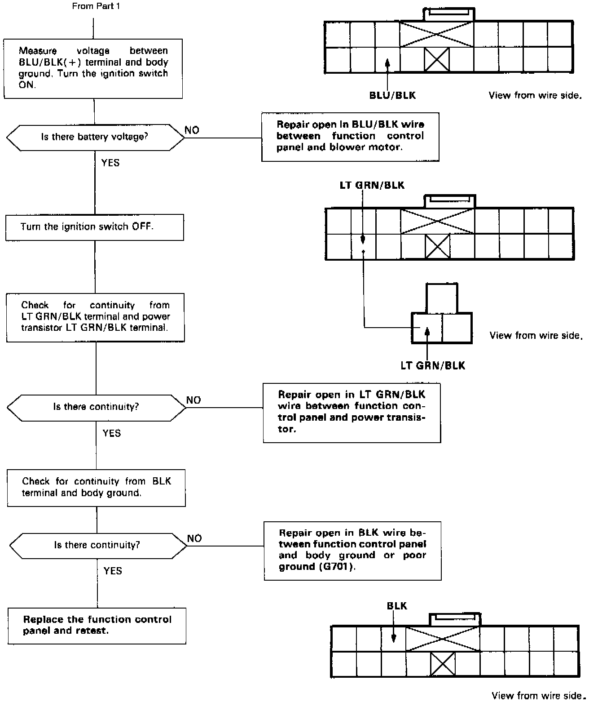

Operation CHARM
: Car repair manuals for everyone.
Home
>>
Acura
>>
1990
>>
Legend Coupe V6-2675cc 2.7L SOHC FI
>>
Repair and Diagnosis
>>
Heating and Air Conditioning
>>
Blower Motor
>>
Testing and Inspection
>>
Automatic Climate Control - Flowcharts
>>
Blower Speed Does Not Change
Blower Speed Does Not Change

